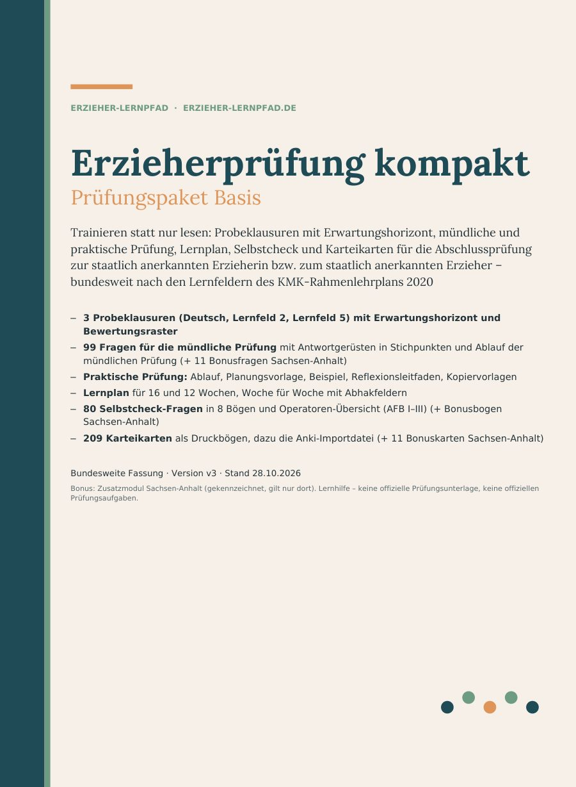
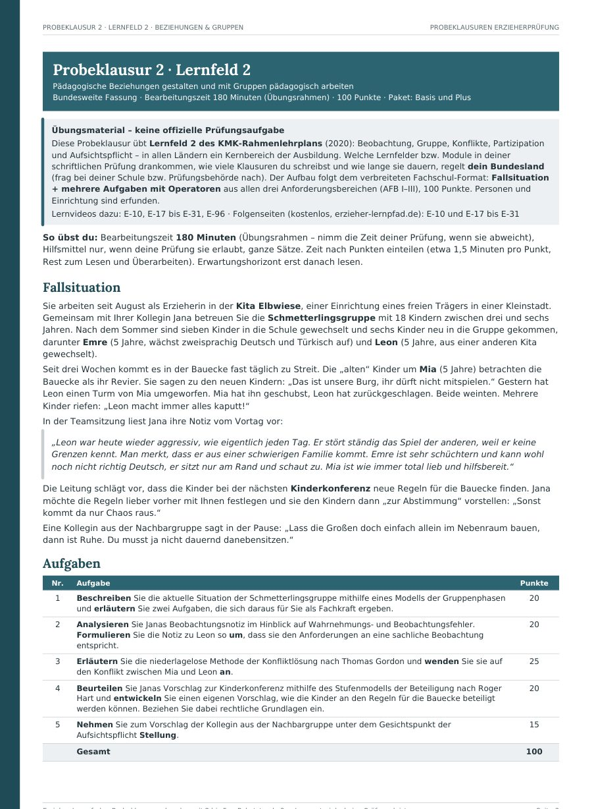
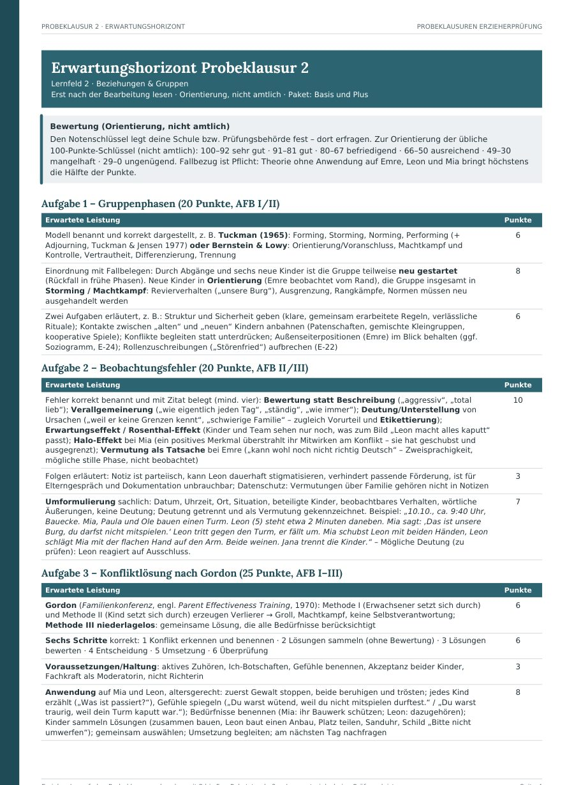
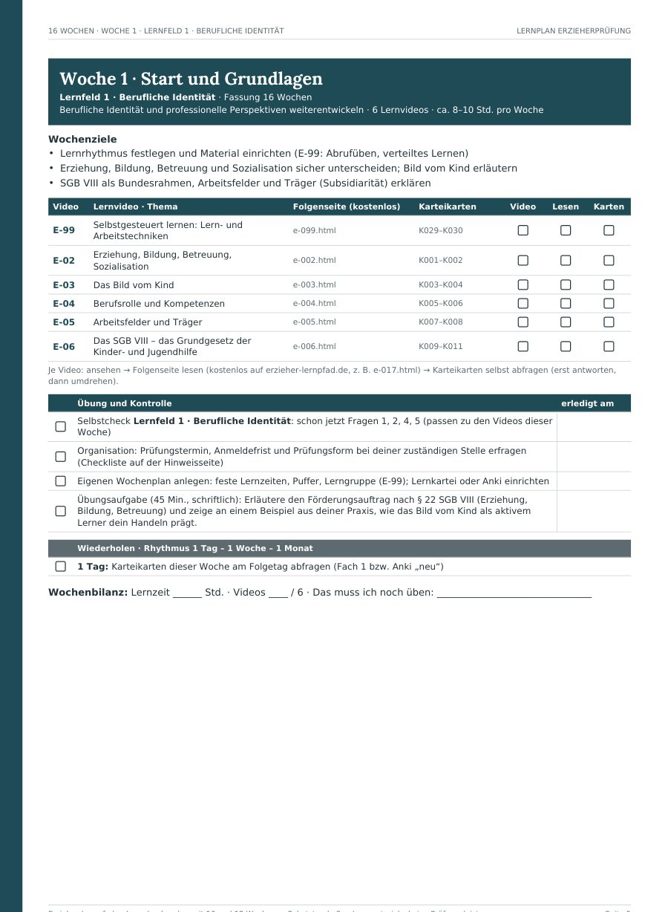
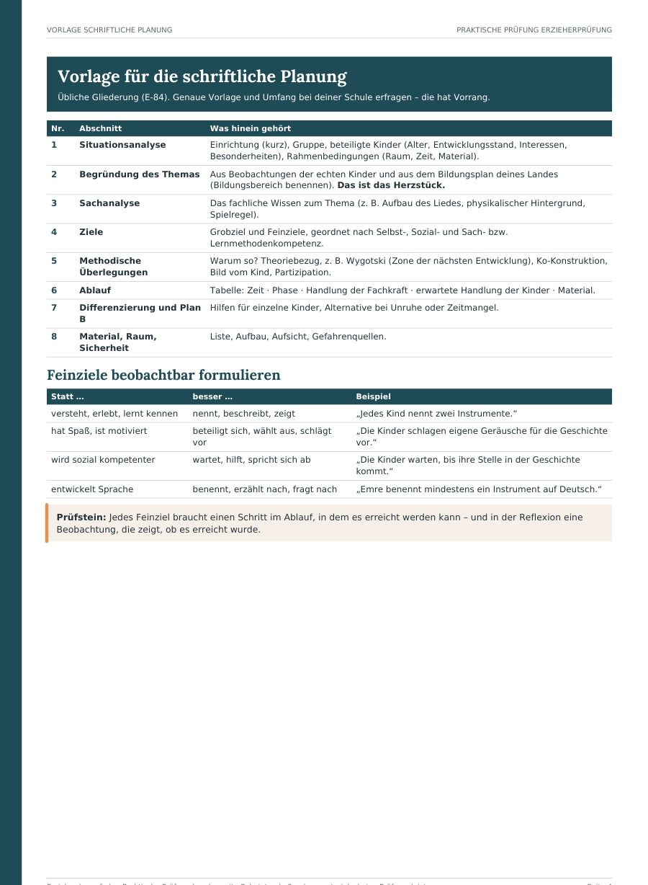

Prüfungspaket · PDF zum Download
Schreib die Prüfung vorher – und sieh genau, wo du stehst.
Ein Paket für alle drei Prüfungsteile – schriftlich, mündlich, praktisch. Die Folgenseiten (und nach und nach die Lernvideos) bleiben kostenlos. Das Prüfungspaket ist für den nächsten Schritt: Probeklausuren unter Prüfungsbedingungen schreiben, mit dem Erwartungshorizont selbst bewerten, mündlich und praktisch üben – und genau sehen, wo du noch Lücken hast.
ab 24,90 € · einmalig · sofort als PDF
- 3 oder 5 Probeklausuren mit Erwartungshorizont
- 99 mündliche Fragen (+ 11 Bonus Sachsen-Anhalt)
- Praktische Prüfung mit Vorlagen
- Bundesweit nach KMK-Lernfeldern

Kostenlos lernen – mit dem Paket trainieren
Auf einen Blick: Was du auf erzieher-lernpfad.de kostenlos bekommst – und was nur im Prüfungspaket steckt.
| Kostenlos auf der Website | Im Prüfungspaket |
|---|---|
| 99 Folgenseiten mit dem Wichtigsten, Begriffen zum Merken und je einer Prüfungsfrage mit Lösungsskizze – die Lernvideos dazu erscheinen ab 2. November nach und nach (ein neues Video pro Tag) | 3 vollständige Probeklausuren (Basis) bzw. 5 (Plus), je 180 Minuten, mit Erwartungshorizont, Punkten und Bewertungsraster – damit du dich selbst bewerten kannst |
| Gratis-Lernplan: 16 Wochen auf 3 Seiten | Ausführlicher Lernplan für 16 oder 12 Wochen: jede Woche eine Seite mit Zielen, Videos, Karteikarten, Selbstcheck, Übungsaufgabe und Wiederholungsrhythmus |
| – | 99 Fragen für die mündliche Prüfung mit Antwortgerüsten in Stichpunkten, plus Ablauf der mündlichen Prüfung (+ 11 Bonusfragen Sachsen-Anhalt) |
| – | Praktische Prüfung: Planungsvorlage, ausgearbeitetes Beispiel, Reflexionsleitfaden, Checklisten und Kopiervorlagen |
| – | Fallsituationen mit Erwartungshorizont in den Fachklausuren – erfundene Fälle aus der Kita, und genau aufgeschlüsselt, was in eine gute Antwort gehört |
| – | 80 Selbstcheck-Fragen mit Lösungshinweisen und eine Übersicht der Operatoren (AFB I–III) (+ 10 Bonusfragen Sachsen-Anhalt) |
| – | 209 Karteikarten zum Ausdrucken (+ 11 Bonuskarten Sachsen-Anhalt) |
| Online lesen | Alles in einer PDF-Datei – offline nutzbar, zum Ausdrucken und Abhaken, mit Bonus-Zusatzmodul Sachsen-Anhalt |
Basis 24,90 € · Plus 29,90 € (5 Klausuren) – einmalig, kein Abo
Pakete vergleichenErst die Leseprobe ansehenDas steckt drin
Sechs Bausteine, die aufeinander verweisen. Der Lernplan ist der rote Faden – er sagt dir jede Woche, was dran ist. Alles in einer PDF-Datei (A4).
Alle Zahlen gelten bundesweit. Dazu kommt als Bonus ein gekennzeichnetes Zusatzmodul Sachsen-Anhalt (11 mündliche Fragen, 10 Selbstcheck-Fragen, 11 Karteikarten) – es gilt nur dort.
3 / 5
Probeklausuren
Deutsch und Kommunikation (Erörterung oder Interpretation), Lernfeld 2 (Gruppen, Beobachtung, Konflikte) und Lernfeld 5 (Elternarbeit, Kinderschutz). Plus zusätzlich Lernfeld 3 (Entwicklung, Inklusion) und Lernfeld 6 (Team, Konzeption, Qualität). Mit Erwartungshorizont, Punkten und Bewertungsraster.
99
Fragen für die mündliche Prüfung
Nach den sechs Lernfeldern sowie Deutsch, Englisch, WiSo/Politik und Ethik/Religion (+ 11 Bonusfragen Sachsen-Anhalt). Zu jeder Frage ein Antwortgerüst in Stichpunkten – zum lauten Üben, allein oder zu zweit.
1 Heft
Praktische Prüfung
Wie du ein Angebot planst, durchführst und reflektierst: Gliederung der schriftlichen Planung, Feinziele, ein ausgearbeitetes Beispiel, Leitfaden für das Reflexionsgespräch, Checkliste und Kopiervorlagen.
16 / 12
Wochen Lernplan
Woche für Woche: Ziele, Lernvideos, Karteikarten, Selbstcheck, Übungsaufgabe und Wiederholen nach 1 Tag, 1 Woche, 1 Monat. Mit Fragen, die du deiner Schule stellen solltest.
80
Selbstcheck-Fragen
8 Bögen (Lernfelder 1–6, praktischer Teil, Deutsch/WiSo/Ethik/Englisch), dazu ein Bonusbogen Sachsen-Anhalt, mit „Kann ich / muss ich üben“ und Lösungshinweisen. Dazu die Operatoren-Übersicht.
209
Karteikarten
Zu allen 99 Themen (+ 11 Bonuskarten Sachsen-Anhalt): Begriff oder Frage vorn, Kernantwort hinten. Als Druckbögen (beidseitig drucken, ausschneiden).
Blick ins Paket
Vier Originalseiten aus dem Paket Basis. Zum Vergrößern antippen – oder lade dir die Leseprobe (PDF, mit einer Seite Erwartungshorizont) herunter.




Für wen das Paket gedacht ist
Passt gut, wenn du …
- dich auf die Prüfung zur staatlich anerkannten Erzieherin bzw. zum Erzieher vorbereitest – an der Fachschule oder als Externe/r
- unter echten Bedingungen üben und dich ehrlich selbst bewerten willst
- eine klare Wochenstruktur brauchst, weil du neben Arbeit und Familie lernst
- mündliche und praktische Prüfung nicht dem Zufall überlassen willst
Passt eher nicht, wenn du …
- offizielle oder „echte“ Prüfungsaufgaben deines Landes suchst – die gibt es hier nicht
- ein ausführliches Lehrbuch erwartest – das Wissen steht kostenlos auf den Folgenseiten
- nur ein einziges Fach brauchst – dann reichen dir vielleicht die kostenlosen Seiten
Pakete und Preise
Bald erhältlich – voraussichtlich ab November 2026
Einmal zahlen, kein Abo. Beide Pakete enthalten Lernplan, mündliche und praktische Prüfung, Selbstcheck und Karteikarten. Der Unterschied sind die Probeklausuren.
Prüfungspaket Plus
29,90 € einmalig
= 2 zusätzliche Klausuren für je 2,50 €
PDF zum Download · Endpreis inkl. MwSt.
- Alles aus dem Paket Basis
- 5 statt 3 Probeklausuren – zusätzlich Lernfeld 3 (Entwicklung, Lerntheorien, Inklusion) und Lernfeld 6 (Konzeption, Team, Gewaltschutz, Qualität)
- je mit Fallsituation, Erwartungshorizont und Bewertungsraster
- Klausuren zu Deutsch und 4 der 6 Lernfelder; Lernfeld 1 und 4 übst du mit mündlichen Fragen und Selbstcheck
Trag dich für den Gratis-Lernplan ein – du bekommst eine Mail, sobald das Paket kaufbar ist.
Prüfungspaket Basis
24,90 € einmalig
PDF zum Download · Endpreis inkl. MwSt.
- 3 Probeklausuren mit Erwartungshorizont: Deutsch, Lernfeld 2, Lernfeld 5
- 99 Fragen für die mündliche Prüfung mit Antwortgerüsten (+ 11 Bonus Sachsen-Anhalt)
- Praktische Prüfung: Planung, Beispiel, Reflexion, Kopiervorlagen
- Lernplan 16 und 12 Wochen, Woche für Woche
- 80 Selbstcheck-Fragen und Operatoren-Übersicht (+ 10 Bonus Sachsen-Anhalt)
- 209 Karteikarten (+ 11 Bonus Sachsen-Anhalt)
Trag dich für den Gratis-Lernplan ein – du bekommst eine Mail, sobald das Paket kaufbar ist.
Unsicher? Leseprobe ansehen – mit Aufgabe und Erwartungshorizont aus Probeklausur 2. Für Schulen und Träger: Lizenzen auf Anfrage an kontakt@erzieher-lernpfad.de.
14 Tage Geld zurück: Wenn das Paket nicht zu deiner Prüfung passt, bekommst du dein Geld zurück – ohne Begründung, per Mail an kontakt@erzieher-lernpfad.de oder direkt über Digistore24. Das ist eine freiwillige Zusage zusätzlich zum gesetzlichen Widerrufsrecht.
Verkauf, Zahlung und Rechnung über Digistore24 als Wiederverkäufer; es gelten dessen Bedingungen und Widerrufsbelehrung. Digitale Lieferung als PDF-Download, keine Versandkosten. Nur für den persönlichen Gebrauch.
Wichtig: Das Prüfungspaket ist eine Lernhilfe und keine offizielle Prüfungsunterlage. Alle Klausuren und Fragen sind eigene Übungsaufgaben im Stil der Prüfung. Prüfungsform, Fächer und Bewertung regelt dein Bundesland – maßgeblich sind die Vorgaben deiner Schule bzw. Prüfungsbehörde. Ein Bestehen kann kein Lernmaterial versprechen.
Wer hinter dem Erzieher-Lernpfad steht
Hinter dem Erzieher-Lernpfad steht Andreas Fahtz. Ich arbeite als Fachkraft in der Kinder- und Jugendhilfe, habe das Erste Staatsexamen für das Lehramt und war viele Jahre Trainer und Übungsleiter. Die Aufgaben sind so gebaut, wie ich selbst Prüfungen vorbereite: erst üben, dann ehrlich mit dem Erwartungshorizont vergleichen.
Die Inhalte beruhen auf Fachliteratur, Gesetzen und den Rahmenvorgaben der Kultusministerkonferenz und wurden mit KI-Unterstützung erstellt. Fehler gefunden? Schreib mir – Korrekturen bekommst du kostenlos.
Das sagen Lernende
Häufige Fragen zum Prüfungspaket
Noch etwas unklar? Schreib an kontakt@erzieher-lernpfad.de.
Was bekomme ich, was es auf der Website nicht gibt?
Auf der Website lernst du das Wissen zu 99 Prüfungsthemen – kostenlos. Das Paket ist zum Trainieren: vollständige Probeklausuren mit Erwartungshorizont und Bewertungsraster, 99 mündliche Prüfungsfragen mit Antwortgerüsten, ein Heft zur praktischen Prüfung mit Vorlagen, den ausführlichen Lernplan, Selbstcheck-Bögen und 209 Karteikarten – alles in einer Datei zum Ausdrucken. Dazu kommt als Bonus ein gekennzeichnetes Zusatzmodul Sachsen-Anhalt.
Was ist der Unterschied zwischen Basis und Plus?
Plus enthält zwei zusätzliche Probeklausuren (Lernfeld 3: Entwicklung und Inklusion, Lernfeld 6: Institution und Team), also fünf statt drei: Deutsch und vier der sechs Lernfelder. Alles andere ist in beiden Paketen gleich. Zu Lernfeld 1 und 4 gibt es in beiden Paketen keine eigene Klausur, aber mündliche Prüfungsfragen, Selbstcheck-Bögen und Übungsaufgaben im Lernplan. Ein Lehrbuch mit allen Lerntexten gehört nicht dazu – die Lerntexte findest du kostenlos auf den Folgenseiten.
Passt das Paket zu meinem Bundesland?
Der Inhalt folgt den sechs Lernfeldern des bundesweiten KMK-Rahmenlehrplans. Wie die Prüfung abläuft – Zahl und Dauer der Klausuren, mündliche und praktische Prüfung, Hilfsmittel, Bewertung – regelt aber jedes Land selbst. Die Aufgaben sind deshalb Übungen im typischen Format, keine Kopie der Prüfung deines Landes. Frag bei deiner Schule oder Prüfungsbehörde nach; im Paket findest du dafür eine Frageliste. Für Sachsen-Anhalt gibt es ein gekennzeichnetes Zusatzmodul.
Sind das offizielle oder echte Prüfungsaufgaben?
Nein. Das Paket ist eine Lernhilfe und keine offizielle Prüfungsunterlage. Alle Klausuren, Fragen und Fälle sind eigene Übungsaufgaben im Stil der Prüfung. Ein Bestehen oder eine bestimmte Note kann kein Lernmaterial versprechen – das Paket hilft dir, gezielt zu üben und deine Lücken zu finden.
Für die Externenprüfung (Nichtschülerprüfung) geeignet?
Ja, gerade wenn du ohne Fachschulunterricht lernst: Lernplan, Selbstcheck und Probeklausuren geben dir die Struktur, die sonst der Unterricht gibt. Zulassung, Fristen und Prüfungsteile der Nichtschülerprüfung erfragst du bei der zuständigen Stelle deines Landes.
Wie bezahle ich, und wer ist mein Vertragspartner?
Der Verkauf läuft über Digistore24. Digistore24 ist dabei Verkäufer und Vertragspartner, wickelt die Zahlung ab und schickt dir die Rechnung. Welche Zahlungsarten angeboten werden, siehst du im Bestellformular.
Wann bekomme ich das Paket?
Nach erfolgreicher Zahlung bekommst du den Download-Link auf der Bestätigungsseite und per E-Mail – bei sofortigen Zahlungsarten also direkt. Du erhältst eine PDF-Datei (A4, mit klickbarem Inhaltsverzeichnis und Links zu den Folgenseiten). Am Handy kannst du darin lesen; zum Arbeiten sind Tablet, PC oder Ausdruck angenehmer.
Kann ich den Kauf widerrufen?
Für den Kauf gelten die Bedingungen und die Widerrufsbelehrung von Digistore24, die dir im Bestellvorgang angezeigt werden. Wichtig zu wissen: Bei digitalen Inhalten, die du sofort herunterladen kannst, kann das gesetzliche Widerrufsrecht vorzeitig erlöschen – aber nur, wenn du im Bestellvorgang ausdrücklich zustimmst, dass die Lieferung vor Ablauf der Widerrufsfrist beginnt, und bestätigst, dass du dadurch dein Widerrufsrecht verlierst. Lies die Angaben im Bestellformular deshalb in Ruhe. Bei Problemen mit dem Download schreib mir.
Kann ich das Paket ausdrucken oder weitergeben?
Ausdrucken ja – für deine eigene Vorbereitung, so oft du willst. Die Lizenz gilt aber nur für dich: Weitergabe, Upload in Gruppen oder Clouds und Weiterverkauf sind nicht erlaubt. Schulen und Träger können eine Lizenz anfragen.
Was ist, wenn ich einen Fehler finde oder sich etwas ändert?
Schreib mir an kontakt@erzieher-lernpfad.de. Korrigierte Fassungen bekommst du für mindestens zwölf Monate nach dem Kauf kostenlos über deinen Download-Zugang bzw. per E-Mail.
Wer steckt dahinter?
Andreas Fahtz. Er arbeitet als Fachkraft in der Kinder- und Jugendhilfe, hat das Erste Staatsexamen für das Lehramt und war viele Jahre Trainer und Übungsleiter. Die Inhalte beruhen auf Fachliteratur, Gesetzen und den Rahmenvorgaben der Kultusministerkonferenz und wurden mit KI-Unterstützung erstellt.
Erst mal kostenlos starten?
Hol dir den Gratis-Lernplan und arbeite mit den Folgenseiten. Das Paket kannst du jederzeit später dazunehmen.